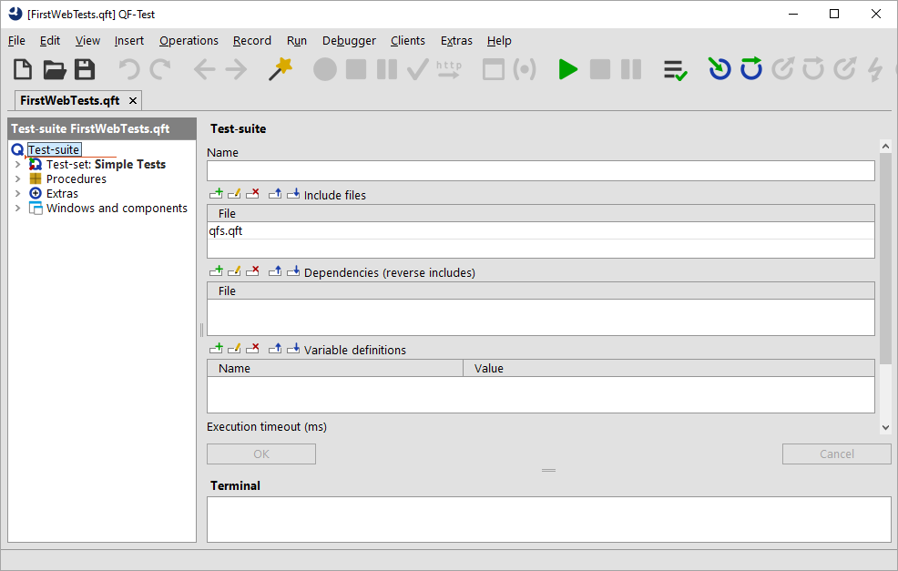
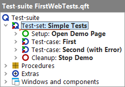

| Version 6.0.3 |
Note On first startup of QF-Test and/or the System Under Test (SUT) via QF-Test you might get a security warning from the firewall asking whether to block the Java network communication or not. As QF-Test communicates with the SUT by means of network protocols, this must not be blocked by the local firewall in order to allow automated testing.
After starting up QF-Test, you can immediately bring up our first example test-suite.
qftest-6.0.3/doc/tutorial of your
QF-Test installation
FirstWebTests.qft
QF-Test will then load the indicated test-suite which should look as follows:
|
|  | ||
|
| Figure 10.1: The Test-suite FirstWebTests.qft | ||
The left part of the main window contains the test-suite,
organized in a tree structure.
The right side shows the details of a selected tree node.
At
bottom right you'll see the terminal displaying messages sent by QF-Test and the
application you are testing.
In the tree structure of the main window you can navigate and select individual nodes of the test-suite.
You'll find the test-set contains two test-case nodes enclosed by a "Setup"/"Cleanup" pair.
|
|  | ||
|
| Figure 10.2: The "Test-set: Simple Tests" Node | ||
In the following sections we'll describe the purpose and function of the individual nodes.
| Last update: 9/6/2022 Copyright © 2002-2022 Quality First Software GmbH |